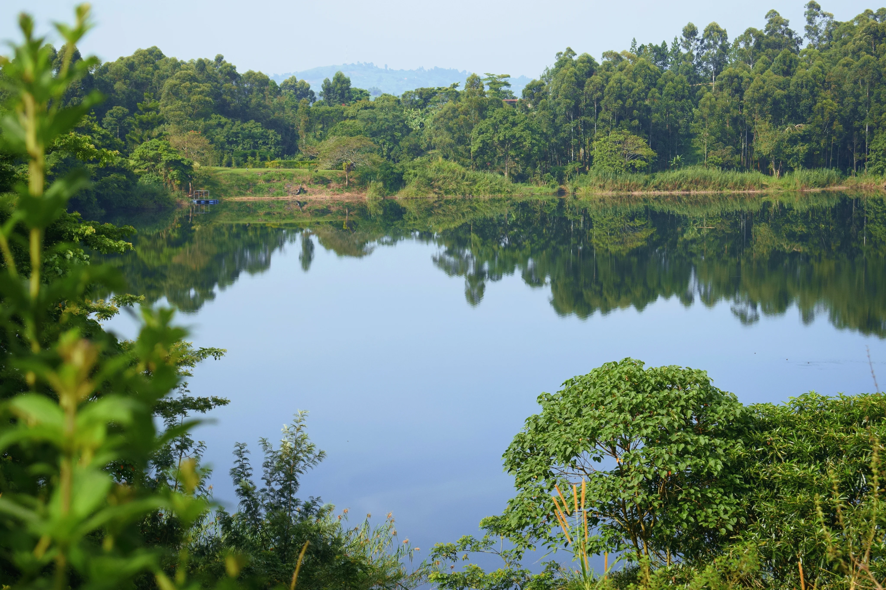

Amabere Caves have the atmosphere of a place where geology and folklore refuse to be separated. The rock formations drip with mineral life, the cave space holds coolness and shadow, and the stories attached to the site give every surface an added layer of significance. It is a compact stop, but never a thin one.
The nearby waterfall and surrounding greenery help widen the experience beyond the cave itself. You move between enclosed stone and open vegetation, between story and scenery, and that mixture gives the site unusual richness for its size.
For travelers around Fort Portal, Amabere works especially well because it offers both physical atmosphere and narrative depth in one manageable visit.
Why Legends Matter Here
Folklore changes how a place is felt. At Amabere, the stories do not merely decorate the visit. They help explain why the cave remains memorable. Instead of only seeing a formation, visitors begin reading the site as a cultural landscape with emotional resonance.
That shift from looking to interpreting is what gives the stop lasting value.
A Strong Companion To Crater Country
Amabere pairs beautifully with the crater lakes and other western Uganda attractions because it adds intimacy and legend to a region already rich in soft scenery. It creates contrast without demanding much time.
As part of a weekend or scenic loop, it can become one of the most distinctive memories.
Why It Is More Than A Quick Stop
Travelers who rush through often leave with a photograph. Travelers who linger leave with a stronger sense of place. The cave, the waterfall, the stories, and the surrounding landscape all deserve a little attention.
Give Amabere that time, and it returns much more than its modest scale suggests.